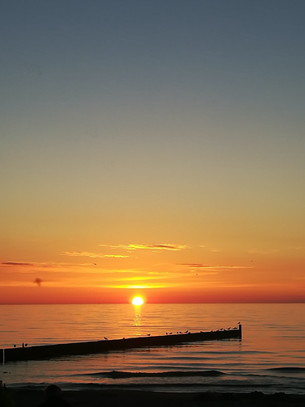

O nas
Serdecznie zapraszamy Państwa do spędzenia wakacji w naszym uroczym i kameralnym ośrodku. Zapewniamy relaks i spokojny wypoczynek w przyjaznej atmosferze. Dbamy o to abyś poczuł prawdziwe odprężenia- z dala od wielkich hoteli czy zatłoczonych ośrodków. Na obszernej posesji znajduje się plac zabaw dla najmłodszych; każdy domek posiada własny taras ze stolikiem i krzesłami. W ofercie znajduje się 6 domków holenderskich oraz 4 domki kempingowe. Droga do plaży zajmuje zaledwie 5 min pieszo.
